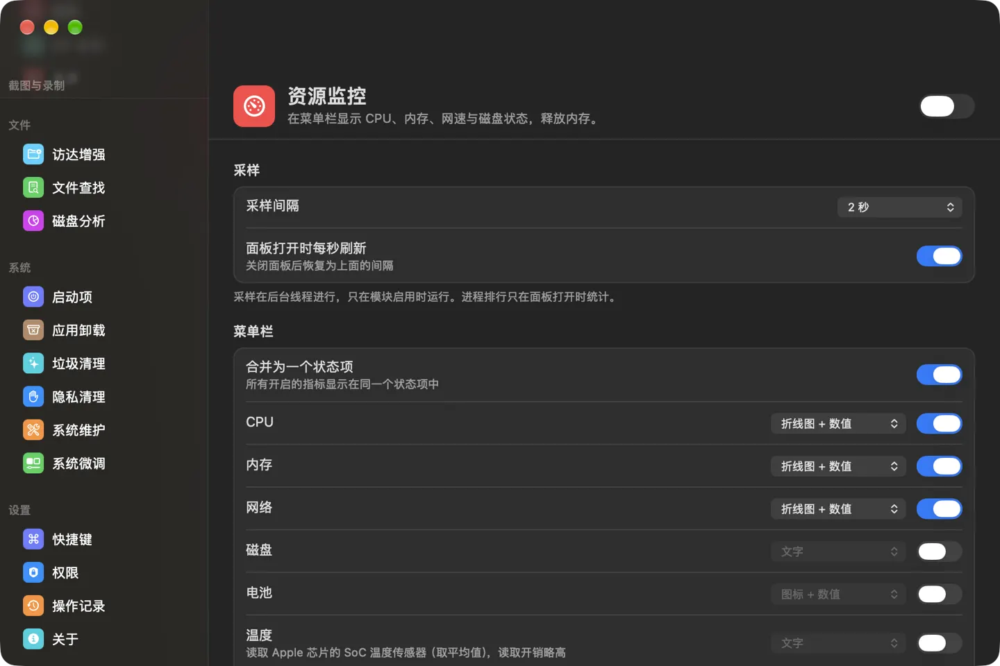
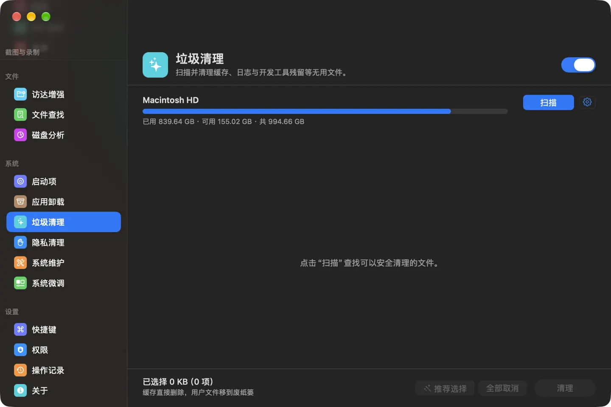

常驻菜单栏的 Mac 工具箱
启动器、窗口管理、剪贴板历史、截图录屏、应用卸载、垃圾清理……这些平时要分别装软件的功能，Orbit 放在了一起。每个功能都能单独关掉，关掉的就不占资源。
需要 macOS 13 或更高版本，安装包已通过 Apple 公证 · 最新版本 1.0.4

包含哪些功能
共 17 个模块，分四组。点进任意一项，看具体怎么用、能省下哪些步骤。
所有快捷键都可以在控制中心的「快捷键」页修改。
控制中心里的几个页面
侧边栏按效率、截图与录制、文件、系统四组排列。截图为简体中文界面。



所有模块共用的几个约定
会请求哪些权限
Windows 上也想用？试试 Orbit-Lite
更新说明 · 历史版本 · Orbit-Lite 主页
常见问题